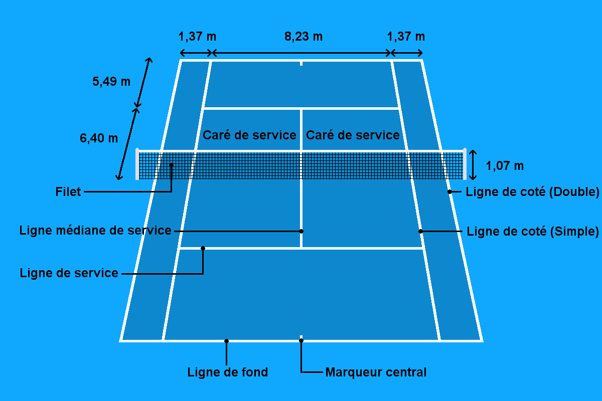

Le tennis, ce qu'il faut savoir
accueil
histoire
règles
matériel
système ATP
stage

Les règles du tennis
Le serveur lance la balle dans le carré de service adverse. S’il le rate, il a une seconde chance.
Puis le receveur lui renvoie la balle, et ainsi de suite.
On marque un point quand l’adversaire loupe la balle, la renvoie hors du terrain ou dans le filet.
Les points se comptent en plusieurs parties :
- Les jeux qui se comptent de 0-15-30-40-jeux. Si les deux joueurs ont 40, ils feront un point supplémentaire
avant de gagner le jeux.
- Les sets qui se comptent avec le nombre de jeux des deux joueurs. On gagne le set quand on accumule 6 jeux
avec deux jeux d'écart avec son adversaire. Si les deux joueurs sont à 6-6, ils feront un tie-break( Le premier joueur
(ou première équipe) à atteindre 7 points remporte le set,à condition d'avoir au moins deux points d'écart
(sinon le jeu se poursuit jusqu'à ce qu'il y ait deux points d'écart).
- Le match qui est gagné quand un joueur accumule 2 ou 3 sets suivant la compétition.